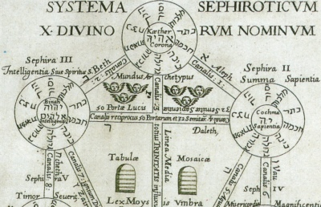

Sacred Texts Esoteric
Buy this Book at Amazon.com
|  | Mysteries of the Qabalahby Elias Gewurz[1922] |
This is the second book on the Kabbalah by Elias Gewurz, the other being Hidden Treasures of the Ancient Qabalah. Written from a Theosophical viewpoint, this thin volume has a lot more Kabbalah content than the previous one. Gewurz explains 'signatures' of each Hebrew letter, the use of techniques such as permutation and numerology to find deeper meaning in the sacred writings, and the history and bibliography of Jewish mysticism. Although, strictly speaking, this is uncredited, the title page mentions 'E.G.' and most library catalogs list this as attributed to Gewurz. Furthermore Gewurz is mentioned by name in a footnote on page 31. This joins the other books published by Yogi Publications under an opaque, and unverified, byline.